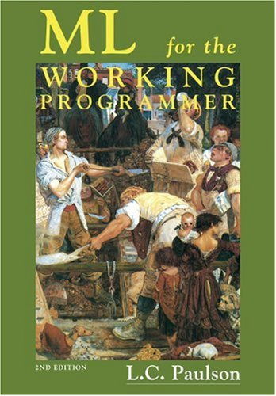

234319 Programming Languages
ML exam summary page
I have made a summary of all examples that appeared in the tutorial, as well as the output they produce. This "cheat-sheet" is good if you do not remember how to do X or Y, or if you are asked about an output of an ML statement. You can download the sml file from here: exam_summary.sml.
Editors for Prolog and ML
There are some options for editing ML. Under windows I have used MLEdit-NT,
which is pretty basic, it has syntax highlighting and allows running ML (assuming SML/NJ is installed)
programs without leaving the editor. Regarding Linux, I heard that there is an editor installed in SSDL,
but I never tried it. Instead I used sml-mode
for emacs. This can be downloaded from here
and installed in your home directory.
For prolog under windows I suggest SWI Prolog Editor. More IDE's can be found on the official SWI-Prolog home page
MLEdit with exam summary opened
Aggregating your homework solution files
Usually you will be required to solve several unrelated questions, but submit only one (or two) file. When I did the course, my methodology was to create a separate file for each question. After I have wrote the code, I run a simple aggregation script to merge all questions into a single file. You can download a simple windows batch file that does this from here (aggregate.bat). Hopefully it will save you some time.

The course book.